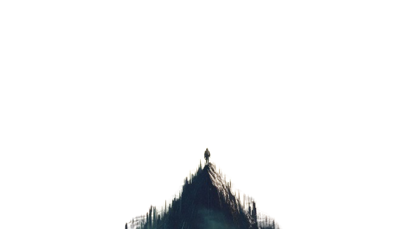
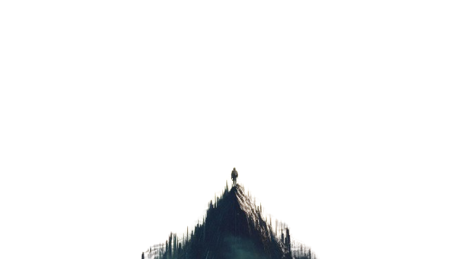

ADVENTURE
ADVENTURE TIME
Adventure is not just an activity, it's a lifestyle. From the thrill of conquering mountains to the serenity of gliding through the sky, each adventure brings a new story and a rush of adrenaline. Whether you're an avid adventurer or just looking to step out of your comfort zone, our adventure guide is here to inspire and guide you to your next great journey.
BIKING
Biking is a perfect blend of exercise, exploration, and excitement. Whether you're navigating rugged mountain trails or cruising along scenic coastal roads, biking offers an unparalleled way to experience nature. With every pedal stroke, you'll discover new landscapes and challenge your limits, making biking an adventure for the body and soul.
PARAGLIDING
Paragliding is the closest you can get to flying like a bird. As you soar high above the ground, the world unfolds beneath you in a breathtaking panorama. This adventure sport offers a unique perspective and a sense of freedom that is unmatched. Whether you're gliding over mountains, valleys, or coastlines, paragliding provides a serene yet exhilarating experience.
SURFING
Surfing is more than just riding waves; it's a way of life that connects you with the ocean. Each wave brings a new challenge and a chance to hone your skills. From the powerful breaks of Hawaii to the gentle swells of Bali, surfing destinations around the world offer something for every level of surfer. Embrace the thrill of the ocean and discover the joy of surfing.